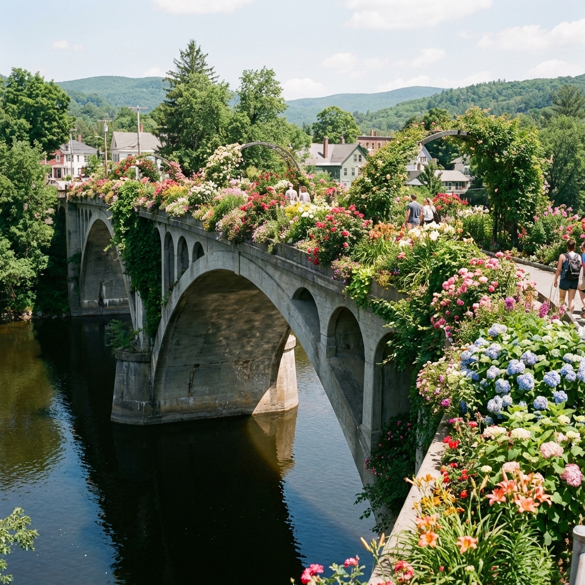
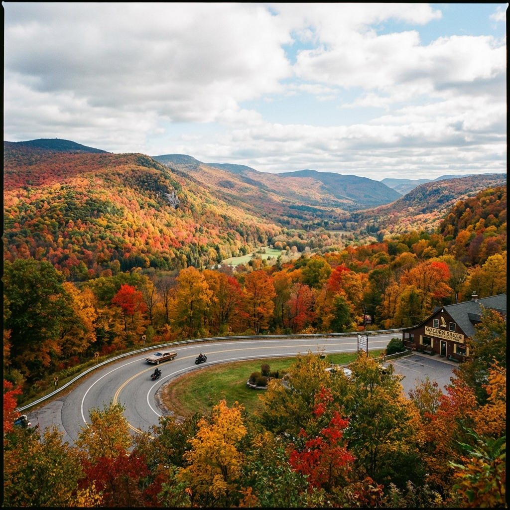
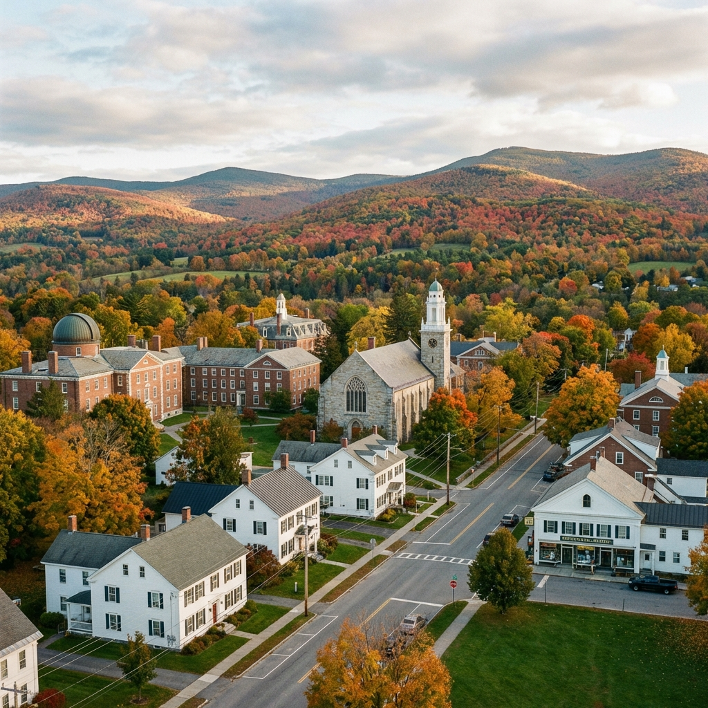
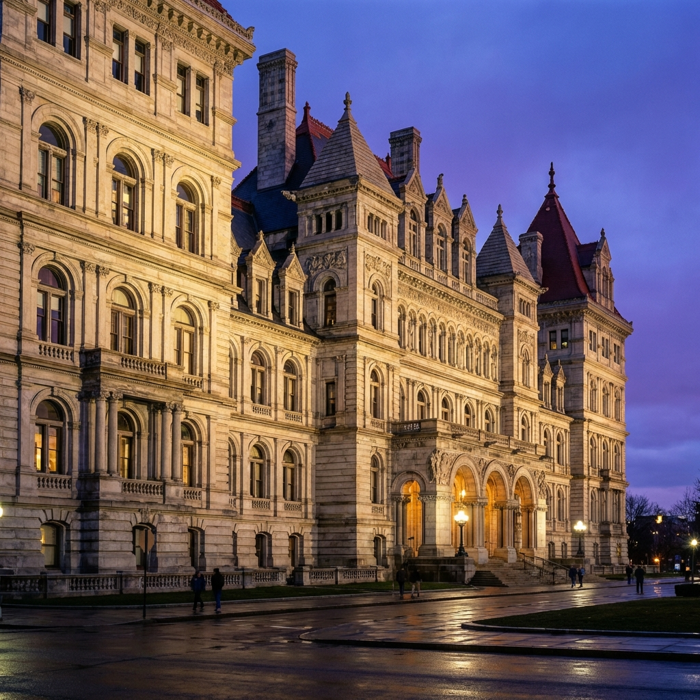

Ruta Escénica: De Waltham a Albany

Bridge of Flowers

Hairpin Turn

Williamstown

Albany Capitol
Hoy aprovechamos que ya tenemos el coche en el hotel de Waltham para salir directamente hacia el oeste, conectando con la emblemática Route 2 (Mohawk Trail).
Hitos del Camino
- Shelburne Falls: Cruza el Bridge of Flowers, un antiguo puente de tranvía convertido en jardín sobre el río.
- The Mohawk Trail: Disfruta del Hairpin Turn para una de las vistas más famosas de Nueva Inglaterra.
- Williamstown: El pueblo universitario "perfecto", sede del prestigioso Williams College.
- Stockbridge (Opcional): Si prefieres la ruta sur, visita el pueblo que inmortalizó Norman Rockwell.
Consejos de Conducción
- Carreteras Secundarias: La Route 2 tiene muchas curvas. Conduce con calma y disfruta de los miradores.
- Fauna: Atención a los ciervos, especialmente al atardecer en zonas boscosas.
- Servicios: Llena el depósito al salir de Boston, las gasolineras en montaña están más espaciadas.

Carreteras secundarias y naturaleza en estado puro.
Mapa de la Ruta Escénica
31 Julio Alojamiento - Albany
Hampton Inn & Suites Albany-Downtown
OPCIÓN PRINCIPALAlbany, NY - Cerca del centro
- Desayuno incluido
- Parking y WiFi gratuitos
Gastos Estimados (Día 3)
- Gasolina: $45 (Ruta escénica + montaña)
- Comida en Shelburne/Williamstown: $60
- Cena en Albany Downtown: $70
- Hotel (Hampton Inn Albany): $115 (Reserva)
- Total día: ~$290